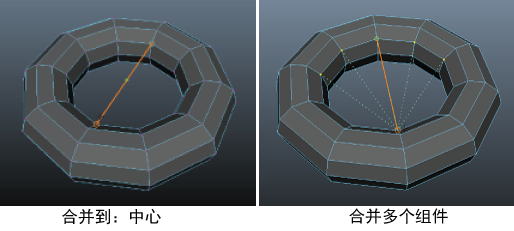

使用“目标焊接工具”(Target Weld Tool)，您可以将顶点或边从一个组件拖动到另一个组件，以便进行合并。只能在组件属于同一网格时进行合并。
使用目标焊接工具(Target Weld Tool)合并组件
- 通过执行下列操作之一打开该工具：
- 从“建模工具包”(Modeling Toolkit)窗口的“工具”(Tools)部分中，单击
 。
。
- 从主菜单栏中，选择。
- 选定对象后，按 Shift 键并单击鼠标右键，然后从标记菜单中选择“目标焊接工具”(Target Weld Tool)。
- 选定顶点后，按 Shift 键并单击鼠标右键，然后从标记菜单中选择。
- 选定边后，按 Shift 键并单击鼠标右键，然后从标记菜单中选择。
- 选定面后，按 Shift 键并单击鼠标右键，然后从标记菜单中选择“目标焊接工具”(Target Weld Tool)。
- 从“建模工具包”(Modeling Toolkit)窗口的“工具”(Tools)部分中，单击
- （可选）在目标焊接选项(Target Weld Options)中，调整“合并到”(Merge To)设置。
您可以在将组件合并到目标组件或合并到选定组件的中心之间切换。
- 选择源组件（边或顶点）或按住 Shift 键并选择多个组件。
- 将光标拖动到目标组件（边或顶点）。
提示： 当光标位于源组件上时，释放鼠标按钮可取消合并操作。
在两个组件之间将出现一条橙色线。如果选择了多个组件，则会从每个源组件绘制绿色预览线，显示合并操作的结果。
如果“合并到: 中心”(Merge To: Center)已启用，将在橙色线上绘制一个绿点以指示中心点。 - 释放鼠标键以合并两个组件。
- 完成组件的合并后，更改为另一个工具或再次单击 退出该工具。
提示： 切换到其他工具后，可以按 Y 键重新激活“目标焊接工具”(Target Weld Tool)。